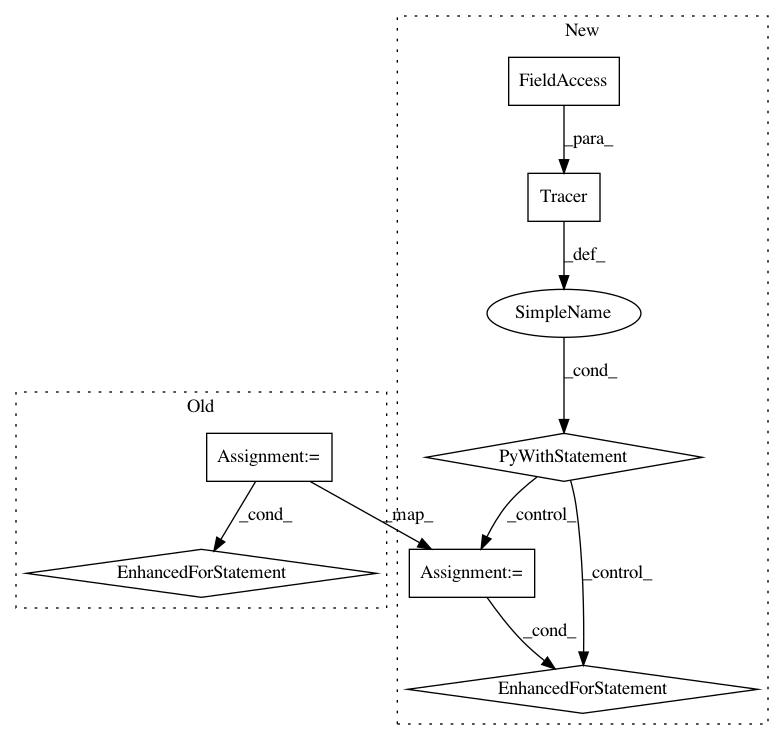

be81d75f31d318e087760bf9cb5b80a1540f3ddd,ilastik-shell/applets/dataSelection/dataSelectionGui.py,DataSelectionGui,addFileNames,#DataSelectionGui#Any#,196
Before Change
// Assign values to the new inputs we just allocated.
// The GUI will be updated by callbacks that are listening to slot changes
for i in range(0, len(fileNames)):
datasetInfo = DatasetInfo()
datasetInfo.filePath = fileNames[i]
// Allow labels by default if this gui isn"t being used for batch data.
datasetInfo.allowLabels = ( self.guiMode == GuiMode.Normal )
self.mainOperator.Dataset[i+oldNumFiles].setValue( datasetInfo )
def updateTableForSlot(self, slot):
Update the given rows using the top-level operator parameters
After Change
Add the given filenames to both the GUI table and the top-level operator inputs.
with Tracer(traceLogger):
// Allocate additional subslots in the operator inputs.
oldNumFiles = len(self.mainOperator.Dataset)
self.mainOperator.Dataset.resize( oldNumFiles+len(fileNames) )
// Assign values to the new inputs we just allocated.
// The GUI will be updated by callbacks that are listening to slot changes
for i in range(0, len(fileNames)):
datasetInfo = DatasetInfo()
datasetInfo.filePath = fileNames[i]
// Allow labels by default if this gui isn"t being used for batch data.
datasetInfo.allowLabels = ( self.guiMode == GuiMode.Normal )
self.mainOperator.Dataset[i+oldNumFiles].setValue( datasetInfo )
def updateTableForSlot(self, slot):
Update the given rows using the top-level operator parameters
In pattern: SUPERPATTERN
Frequency: 4
Non-data size: 7
Instances
Project Name: ilastik/ilastik
Commit Name: be81d75f31d318e087760bf9cb5b80a1540f3ddd
Time: 2012-06-25
Author: bergs@janelia.hhmi.org
File Name: ilastik-shell/applets/dataSelection/dataSelectionGui.py
Class Name: DataSelectionGui
Method Name: addFileNames
Project Name: ilastik/ilastik
Commit Name: f921a41292d13178a6eca168b8bd261f190b76b4
Time: 2012-06-26
Author: bergs@janelia.hhmi.org
File Name: ilastik-shell/applets/pixelClassification/pixelClassificationSerializer.py
Class Name: PixelClassificationSerializer
Method Name: _serializePredictions
Project Name: ilastik/ilastik
Commit Name: f921a41292d13178a6eca168b8bd261f190b76b4
Time: 2012-06-26
Author: bergs@janelia.hhmi.org
File Name: ilastik-shell/applets/dataSelection/dataSelectionSerializer.py
Class Name: DataSelectionSerializer
Method Name: _serializeToHdf5
Project Name: ilastik/ilastik
Commit Name: c99c7e6af33e4e9b6b5f4564b042cafc5a440b1a
Time: 2012-06-25
Author: bergs@janelia.hhmi.org
File Name: lazyflow/operators/obsolete/classifierOperators.py
Class Name: OpTrainRandomForestBlocked
Method Name: execute